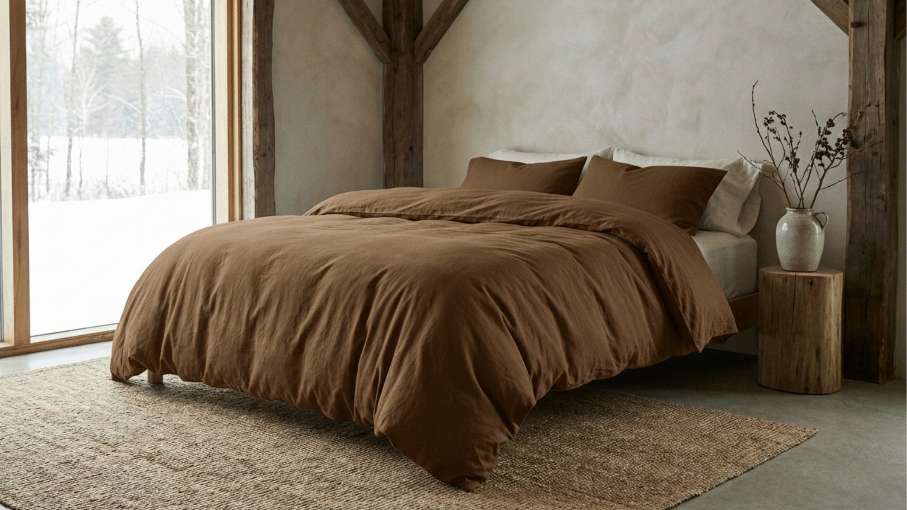

BIANCHERIA DA LETTO
Comfort e stile per il tuo riposo
Scopri la nostra selezione di lenzuola, copripiumini, copriletti e coperte. Materiali di qualità, dettagli curati e proposte eleganti per arredare il letto con gusto.
 Lenzuola
Copripiumini
Copriletti
Coperte
Lenzuola
Copripiumini
Copriletti
Coperte